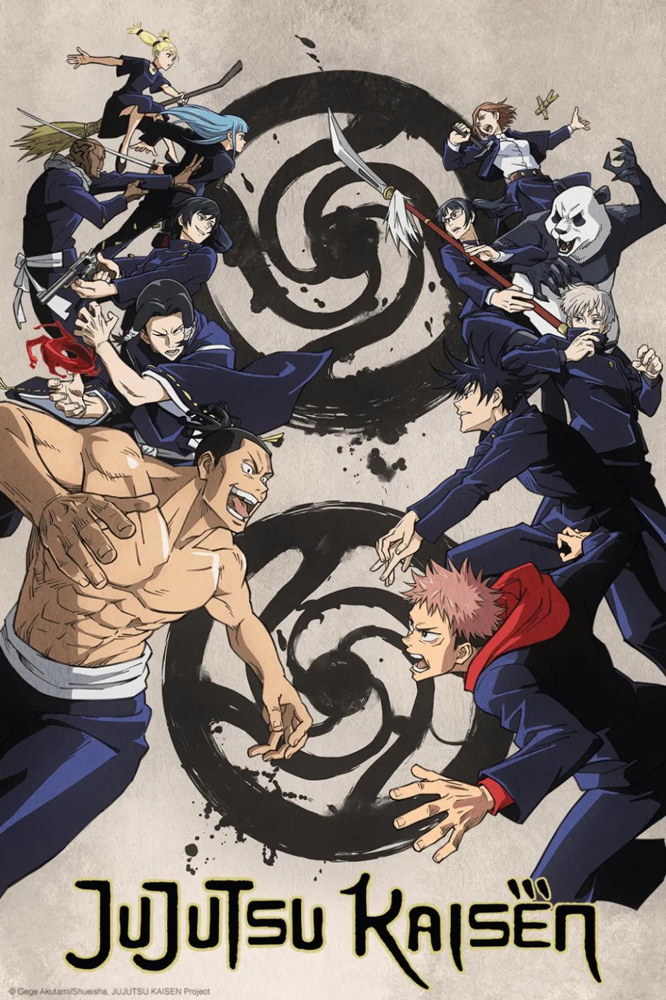

What is Jujutsu Kaisen?
Jujutsu Kaisen is a Japanese manga series written and illustrated by Gege Akutami. It has been serialized in Shueisha's Weekly Shōnen Jump magazine since March 2018, with its chapters collected in twenty tankōbon volumes as of July 2023. The story follows high school student Yuji Itadori as he joins a secret organization of Jujutsu Sorcerers to eliminate a powerful Curse named Ryomen Sukuna, of whom Yuji becomes the host.
What is it about?
Jujutsu Kaisen dives into a world where cursed energy fuels terrifying spirits and the sorcerers who battle them. The story follows Yuji Itadori, a seemingly ordinary student who becomes entangled in the supernatural after consuming a powerful cursed object. What makes the series stand out is its blend of intense action, emotional depth, and a cast of characters who each carry their own burdens and motivations. It’s a universe where strength comes not just from power, but from understanding fear, loss, and the will to keep moving forward
How often does it release?
Jujutsu Kaisen’s release schedule has become a talking point of its own, thanks to the series’ mix of weekly manga chapters and highly anticipated anime seasons. The manga typically follows a weekly rhythm in Weekly Shonen Jump, though breaks occur for holidays or author rest weeks. The anime, produced in seasonal batches, tends to arrive in major arcs—each one dropping with intense hype and leaving fans buzzing between seasons. This staggered pattern keeps the community in a constant cycle of anticipation, discussion, and theory-crafting, making every new chapter or episode feel like an event.
Jujutsu Kaisen Release ScheduleMajor Themes
- The Struggle Between Good and Evil: The series explores the complex nature of morality, where characters often face difficult choices that blur the lines between right and wrong.
- The Value of Life: Jujutsu Kaisen delves into the significance of life and the lengths to which individuals will go to protect it, highlighting themes of sacrifice and resilience.
- Friendship and Loyalty: The bonds between characters are a central theme, showcasing how trust and camaraderie can empower individuals to overcome formidable challenges.
- Courage in the Face of Fear: The series emphasizes the importance of bravery, as characters confront their fears and insecurities while battling powerful curses.
- Growth and Self-Discovery: Jujutsu Kaisen portrays the journey of self-improvement, where characters evolve through their experiences, learning more about themselves and their capabilities.